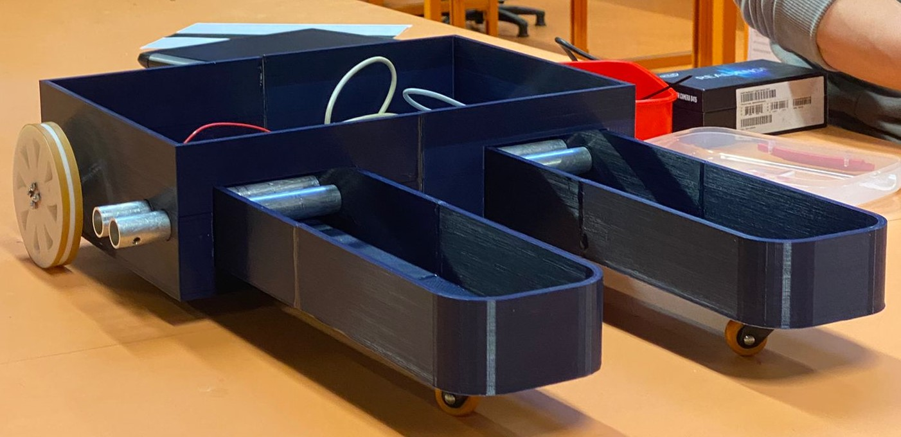

The project focused on redesigning a hydraulic manifold for additive manufacturing (AM) to leverage its advantages over conventional manufacturing methods. AM offered benefits such as part consolidation, freedom in geometry, high customization, and a cost-to-complexity ratio. The project aimed to understand and overcome the limitations of AM related to material, process, and part geometry. Prototypes were created and design iterations were performed to optimize the manifold's design, incorporating features like self-supporting angles, vertical paths, and optimized self-supporting circles. The project demonstrated the potential of AM for weight reduction, improved manufacturability, and complex geometry utilization in the manifold design.

The objective of the project was to redesign a hydraulic manifold using additive manufacturing (AM) techniques, with the goal of capitalizing on the advantages offered by AM over conventional manufacturing methods. The project sought to understand the benefits of AM, including part consolidation, freedom in geometry, high customization, and a cost-to-complexity ratio. Additionally, the project aimed to identify and address the limitations of AM, considering factors such as material compatibility, process constraints, part geometry requirements, and post-processing considerations.
To achieve these objectives, the project followed a systematic process of prototyping, design iteration, and testing. The process began by conducting a thorough analysis of the advantages of AM over conventional manufacturing methods. Part consolidation was identified as a significant benefit, as conventional manufacturing often requires multiple parts to be assembled together, resulting in additional weight due to the joining materials such as screws, rivets, or welding. By consolidating multiple parts into a single piece, the weight could be reduced significantly.
Another advantage of AM explored in the project was the freedom in geometry. Conventional manufacturing often requires designs to be modified to accommodate standard tooling and machining techniques, limiting the possibilities for complex geometries. However, AM offers more flexibility in creating intricate shapes and topologically optimized designs, resulting in higher strength-to-weight ratios and the ability to incorporate complex and optimized internal geometries.
The high level of customization achievable through AM was also a focal point. The ability to create parts with tailored geometries allows for optimized designs that can improve performance and functionality. Complex and optimized internal structures, such as cellular structures or semi-hollow components, can be easily fabricated using AM, reducing weight without compromising strength.
The cost-to-complexity ratio was another important consideration. Conventional manufacturing methods often increase in cost as the complexity of the design increases, as it requires specialized tooling and machining operations. However, AM processes, such as slicing a 3D object into 2D layers and layering them on top of each other, provide a relatively constant cost regardless of complexity. This cost advantage makes AM particularly suitable for producing intricate and complex parts.
With the advantages of AM identified, the project focused on addressing its limitations, which depend on various factors. Material selection was a crucial consideration, as different AM processes are compatible with specific materials. The project defined the material and process to be used, narrowing down the options to ensure compatibility and feasibility.
Part geometry requirements also played a significant role in the project. The team analyzed the limitations of the chosen AM process and incorporated design features to overcome these limitations. Through prototyping and testing, the team iterated on the design to optimize it for AM fabrication, considering factors such as self-supporting angles, vertical paths, end-supported paths, optimized self-supporting features, rounded corners, and the removal of unnecessary base material.
Throughout the design iteration process, the team conducted benchmarking tests, evaluated the feasibility of different design features, and considered the balance between manufacturability, performance, and cost. The goal was to achieve a final design that addressed the limitations of AM while maximizing the benefits offered by the technology.
Overall, the objective of the project was to leverage the advantages of AM, overcome its limitations through thoughtful design iteration, and demonstrate the potential of AM in redesigning the hydraulic manifold. The systematic process of prototyping, analyzing, and optimizing the design allowed the team to achieve a final design that showcased weight reduction, improved manufacturability, and successful incorporation of complex geometries.
The project resulted in three design iterations, each aimed at improving the hydraulic manifold's design for additive manufacturing (AM). The first design iteration involved creating a shelled version of the manifold, utilizing fused deposition modeling (FDM) for printing. However, this approach required the use of support structures, which increased the weight of the part and resulted in a poorer surface finish. It became evident that FDM was not suitable for printing the design without support structures due to the presence of long unsupported spans, leading to print failures.
Taking the first iteration as a starting point, the team proceeded with the second design iteration. This iteration focused on addressing the flaws identified in the initial design. Several design features were incorporated based on benchmarking and testing results. One notable feature was the utilization of self-supporting angles, as angles larger than 45 degrees were found to be self-supporting in FDM printing. By consolidating two larger paths and creating a self-supporting base, stability was improved, and smaller paths could extend outwards with self-supported angles as well. This enhanced the robustness of the joint paths.
The second design iteration also incorporated long vertical paths, as it was discovered that FDM printing could handle extended pillars without collapse or issues. These vertical paths were utilized as platforms for other paths to branch out from, providing more flexibility in the design. Additionally, long end-supported paths were implemented, taking advantage of the ability to print long spans if both ends were supported. This approach reduced material usage compared to consolidating paths and ensured a cost-effective design.
Other design features included optimizing self-supporting circles by designing them to incline at 45 degrees, improving printing reliability. Rounded corners were incorporated to reduce stress concentration and fluid constrictions during operation, enhancing the part's durability and performance. Unnecessary base material was removed to optimize the design, ensuring the retained areas served structural integrity and support for paths that required additional support.
The second design iteration successfully addressed some of the flaws in the initial design. However, there were still some issues to be resolved. Inconsistent print patterns were observed in one of the holes, attributed to an unsupported circle in the design that went unnoticed during the CAD process. This oversight compromised the mechanical strength of that section and could lead to print failures or weaker performance. Additionally, a thin-walled section of the design was prone to snapping during part removal from the 3D printer, indicating that the given wall dimensions were too thin. This flaw needed rectification to prevent premature failure during operation.
Building on the insights gained from the second iteration, the team proceeded to the final design iteration. The objective was to address the remaining flaws and create a robust and reliable design for AM. The third iteration introduced self-supporting structures under the long end-supported paths, providing consistent support throughout the pipe length and ensuring both cosmetic and mechanical success. The base design was reinforced with two structural members directly connected to the mounting locations, addressing the issue of a flimsy base observed in the previous iteration. To rectify the thin-walled design flaw, a chamfered edge was added to the connecting section, increasing material contact and strengthening the neck area. Lastly, the circular shape was replaced with a tear drop shape with a 45-degree angle, creating a self-supporting top section and improving the reliability of the print.
The final design iteration demonstrated significant improvements over the previous iterations. Printing the design at a reduced scale to conserve resources, the results showed the successful resolution of previous flaws. The features printed as expected, with the additional material cost being only a slight difference of 1 gram compared to the previous iteration. The flaws that were previously present, such as inconsistent print patterns, flimsy base, and thin-walled sections, were effectively addressed, resulting in a design that exhibited enhanced cosmetic and mechanical properties.
In conclusion, the project's results showcased the iterative design process and its ability to overcome limitations and refine the design for AM. The final design iteration successfully resolved the initial flaws, creating a robust and reliable hydraulic manifold design suitable for additive manufacturing. The project demonstrated the potential of AM in improving the manufacturability, weight reduction, and incorporation of complex geometries in the hydraulic manifold design.